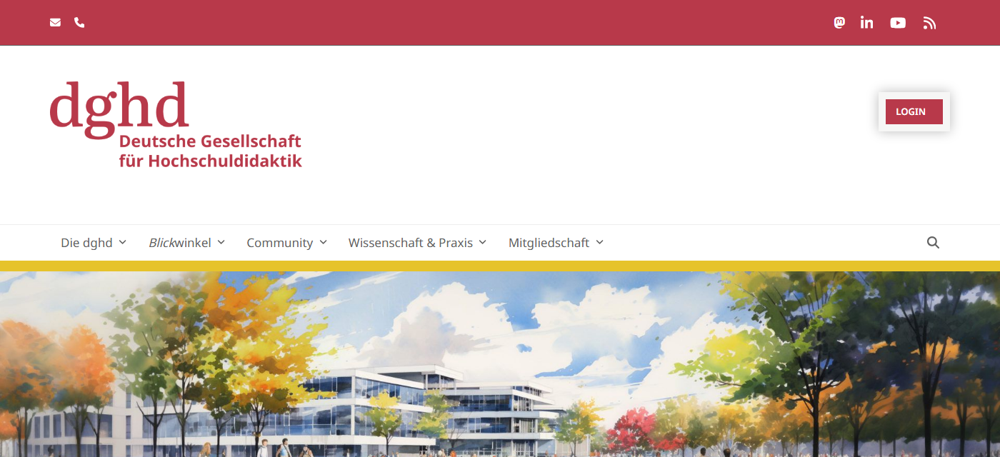

#A7253ARGB 167 37 58
Wortmarke, Links, Schaltflächen, Überschriften-Akzente. Weiße Schrift auf Rot erfüllt AA und AAA (7,1 : 1).
Website-Relaunch dghd.de
Gestaltungsgrundlagen
Ein kurzes Handbuch für die neue Website: wie Logo, Farben, Schrift und die neuen Kartenformen zusammenspielen, und warum. Es baut auf dem auf, was die dghd seit 2018 für ihr Erscheinungsbild festgelegt hat, und auf der Bildmarke 2026.

01 · Die Idee
Zwei Karten, ein gemeinsamer Raum
Die Hochschuldidaktik steht auf zwei Säulen, Forschung und Anwendung. Keine trägt ohne die andere. Die Bildmarke zeigt genau das: zwei Moderationskarten, wie sie in jedem hochschuldidaktischen Workshop an der Wand hängen.
Die rote Karte steht für die Forschung, die gelbe für die Anwendung. Wo sie sich überlagern, entsteht ein heller dritter Raum. Das ist der Ort, an dem die dghd arbeitet: zwischen Erkenntnis und Praxis.
Das Gelb ist dabei kein Zufall. Es erinnert an den Arbeitskreis Hochschuldidaktik (AHD), aus dem die dghd hervorgegangen ist, und holt dessen Akzentfarbe wieder nach vorn. Die Wortmarke bleibt unverändert und steht weiter für Tradition und Bodenständigkeit.
Dynamik durch Schräglage, Stabilität durch die Wortmarke, Transparenz durch Überlagerung.
Aus der Beschreibung der Bildmarke. Die drei Begriffe sind die Messlatte für jede Gestaltungsentscheidung auf der Website: Bewegt sich etwas, bleibt die Struktur trotzdem ruhig? Ist nachvollziehbar, wie Inhalte zusammenhängen?
Für die Website heißt das: Die Karten sind nicht nur Logo, sie werden zum Baustein. Bilder bekommen einen Kartenrahmen, Teaser sehen aus wie Moderationskarten, und Hervorhebungen nutzen den hellen dritten Raum.
02 · Von heute zu morgen
Was bleibt, was sich ändert
Die heutige Seite ist über Jahre gewachsen. Sie hat eine klare Farbwelt, aber keine eigene Formensprache: Symbole aus einer Standardbibliothek, graue Kästen, ein illustriertes Titelbild ohne Bezug zur dghd.

Das bleibt
- Die Wortmarke dghd und der Namenszug, unverändert.
- Rot und Gelb als Hauptfarben der dghd.
- Die Schriftfamilien Literata und Noto Sans. Sie sind heute schon auf der Seite im Einsatz, der Wechsel bleibt also für Stammleser vertraut.
- Das gelbe Band als Erkennungszeichen, künftig schmaler und gezielter.
Das ändert sich
- Rot wird tiefer: #A7253A statt #B8394A, abgestimmt auf die Bildmarke.
- Neu: ein tiefes Lila (#2E1F52) als ruhiger Grundton für dunkle Flächen, Fußbereich und Navigation.
- Statt Standardsymbolen eigene Piktogramme, abgeleitet aus der Kartenform.
- Statt grauer Kästen Moderationskarten mit farbiger Kante.
- Statt eines austauschbaren Titelbilds echte Inhalte vorn: Tagung, Stellen, Zielgruppen.
- Größere Grundschrift (18 px) und mehr Weißraum, gut lesbar auch auf dem Smartphone.
03 · Logo
Aufbau, Schutzzone, Einsatz
Aufbau
| Element | Festlegung |
|---|---|
| Rote Karte (Forschung) | #A7253A, um 2,5° nach links geneigt |
| Gelbe Karte (Anwendung) | #E8C02C, um 5° nach rechts geneigt |
| Überlagerung (dritter Raum) | Verlauf vertikal von Weiß #FFFFFF zu Hellgelb #FFFFB0, Mitte bei 60 % |
| Wortmarke | dghd in Rot, darunter der Namenszug in zwei Zeilen |
| Maßeinheit | Die Höhe der Bildmarke (H) ist das Maß für alle Abstände |
Schutzzone
Um das Logo bleibt auf allen Seiten ein freier Raum von einer halben Bildmarkenhöhe. Kein Text, kein Bildrand und keine andere Marke ragt hinein. So war es in den Hilfslinien zur Bildmarke angelegt.
Varianten

Positiv auf Weiß oder Papier. Standard für Kopfbereich und Dokumente.
Negativ auf Lila. Wortmarke weiß, die Karten behalten ihre Farben.
Nur die Bildmarke: Favicon, Profilbild in sozialen Netzwerken, App-Symbol. Ab einer Breite unter 120 px.
Bitte nicht
Die Bildmarke drehen oder spiegeln. Die Neigung der Karten ist festgelegt.
Die Kartenfarben tauschen oder umfärben.
Das Logo verzerren oder die Teile neu anordnen.
Das Logo ohne ruhige Fläche auf unruhige Bilder setzen.
04 · Farben
Vier Kernfarben, klar verteilt
Rot und Gelb tragen die Marke, Lila gibt Tiefe und Ruhe, Hellgelb öffnet den dritten Raum. Das Lila ist ein Vorschlag aus der Geschäftsstelle und passt, weil es den warmen Farben einen kühlen, seriösen Gegenpol gibt.
Rot · Forschung
Gelb · Anwendung
#E8C02CRGB 232 192 44
Akzente, Marker, Kanten der Moderationskarten, gelbe Schaltfläche. Nie als Schriftfarbe auf Weiß (1,8 : 1).
Akzente, Marker, Kanten der Moderationskarten, gelbe Schaltfläche. Nie als Schriftfarbe auf Weiß (1,8 : 1).
Lila · Grundton
#2E1F52RGB 46 31 82
Dunkle Flächen, Fußbereich, Navigation, Überschriften auf hellem Grund. Auf Weiß 14,6 : 1.
Dunkle Flächen, Fußbereich, Navigation, Überschriften auf hellem Grund. Auf Weiß 14,6 : 1.
Hellgelb · dritter Raum
#FFFFB0RGB 255 255 176
Hervorgehobene Flächen, Schlagworte, Verlauf der Überlagerung. Lila und Rot darauf gut lesbar.
Hervorgehobene Flächen, Schlagworte, Verlauf der Überlagerung. Lila und Rot darauf gut lesbar.
Verteilung auf einer Seite
Papier und Weiß 60 %
Lila 22 %
Rot 10 %
Gelb 8 %
Richtwert, keine Regel. Wichtig ist, dass Gelb selten bleibt. Dann wirkt es als Signal.
Ergänzend
| Farbe | Wert | Einsatz |
|---|---|---|
| Tinte | #1D1830 | Fließtext |
| Papier | #FCFBF5 | Seitenhintergrund |
| Blau | #3B5BB8 | nur Grafiken und Diagramme |
| Grün | #5AA75C | nur Grafiken und Diagramme |
Blau und Grün kommen aus der CI-Ergänzung von 2022 und bleiben, wie dort festgelegt, sparsam: für Schaubilder, Diagramme und Flächen zur Gliederung. In der Oberfläche der Website tauchen sie nicht auf. Schwarz und Weiß sind neutral und immer erlaubt.
Lesbarkeit der Kombinationen
| Schrift auf Fläche | Kontrast | für Fließtext |
|---|---|---|
| Tinte auf Papier | 16,1 : 1 | ja |
| Lila auf Weiß | 14,6 : 1 | ja |
| Hellgelb auf Lila | 14,1 : 1 | ja |
| Weiß auf Rot | 7,1 : 1 | ja |
| Lila auf Gelb | 8,4 : 1 | ja |
| Gelb auf Weiß | 1,8 : 1 | nein, nur als Fläche oder Linie |
| Rot auf Lila | 2,1 : 1 | nein |
05 · Schrift
Literata für Haltung, Noto Sans für Klarheit
Literata · Überschriften
Zwischen Anspruch und Wirklichkeit
Blickwinkel
Noto Sans · Fließtext und Oberfläche
Die dghd ist die wissenschaftliche Fachgesellschaft für alle, die an Hochschulen lehren, forschen und Lehre gestalten.
Beide Schriften sind heute schon auf dghd.de im Einsatz. Literata ist eine Leseschrift mit ruhigen Serifen, die gut zur Wortmarke passt und in Überschriften Haltung zeigt. Noto Sans ist für Bildschirme gebaut, sehr gut lesbar und deckt alle Sprachen ab, auch bei Namen aus internationalen Kooperationen.
Beide sind frei verfügbar und werden auf dem eigenen Server eingebunden, ohne Verbindung zu externen Schriftdiensten.
| Ebene | Schrift | Größe |
|---|---|---|
| Seitentitel | Literata 600 | 48 bis 64 px |
| Abschnitt | Literata 600 | 32 bis 40 px |
| Kartentitel | Literata 600 | 22 px |
| Fließtext | Noto Sans 400 | 18 px, Zeilenabstand 1,6 |
| Oberfläche, Schlagworte | Noto Sans 600 | 13 bis 16 px |
Das Wort Blickwinkel behält seine kursive Auszeichnung aus der heutigen Navigation.
06 · Navigation
Ein Menü, das zwei Wege kennt
Die dghd möchte ihr Menü entlang der Zielgruppen aufbauen und hat als Vorbild die Seitenleiste der New York University genannt. Beides ist in der Navigation angelegt: eine ruhige Seitenleiste nach Themen und darüber die Einstiege nach Zielgruppe.
Die Regel aus dem Menü-Prototyp
Hat ein Menüpunkt bis zu drei Unterpunkte, klappen sie direkt darunter auf. Hat er vier oder mehr, öffnet sich eine Ebene als Fächer zur Seite. So bleiben kurze Bereiche kompakt und lange Bereiche übersichtlich. Die Regel stammt aus dem Prototyp der Geschäftsstelle und wird so übernommen.
Zielgruppen als zweiter Weg
Die vier Zielgruppen aus der Zielgruppenbeschreibung bekommen eigene Einstiege auf der Startseite: Lehrende, HD Forschende, HD Professionals und Management von HD-Einrichtungen. Jeder Einstieg führt auf eine Übersicht, die über das Schlagwort „Zielgruppe“ gefiltert wird. Die Zuordnung der Organe zu den Zielgruppen ergänzt die Geschäftsstelle.
Auf dem Smartphone
Die Seitenleiste wird zur Kopfzeile mit Logo und Menüknopf. Das Menü öffnet sich darunter, alle Ebenen untereinander, Schrift nicht kleiner als 16 Pixel. Das Wort Blickwinkel bleibt auch dort kursiv ausgezeichnet.
- Community ›
- Wissenschaft & Praxis ›
- Veranstaltungen ⌄
- Veranstaltungskalender
- dghd-Jahrestagung
- Veranstaltung einreichen
- Aktuelles & Blickwinkel ›
- Die dghd ›
- Service ›
Community
Community im ÜberblickArbeitsgruppenNetzwerkeKommissionenNachwuchsKooperationenMitgliedschaftMeine dghd
Acht Unterpunkte, deshalb öffnet sich der Bereich als Fächer. „Veranstaltungen“ hat drei und klappt nach unten.
Die Seitenleiste ist in Entwurf 1 umgesetzt, die Entwürfe 2 und 3 zeigen dieselbe Struktur als Kopfzeile mit Aufklappmenü.
Was sonst noch festliegt
Schlagworte
Jeder Beitrag trägt nach dem Kategorien- und Schlagwortsystem der dghd eine Hauptkategorie und Schlagworte zu Thema, Format, Zielgruppe und Herkunft. Die Farbe zeigt die Dimension:
HauptkategorieFormatHerkunft, Organ
Thema und Zielgruppe erscheinen als Filter, nicht als Farbfläche, sonst wird es bunt.
Partner und Kooperationen
Ein eigener Block, getrennt nach fachlichen und technischen Partnern. Logos einfarbig in Grau, beim Überfahren in ihrer Originalfarbe. So lässt sich auch ein Hosting-Partner sichtbar nennen, ohne dass die Seite nach Werbung aussieht.
Partner APartner BPartner C
Fediverse und Kanäle
Die dghd ist auf Mastodon, LinkedIn und YouTube. Diese drei stehen im Fußbereich und auf der Kontaktseite, mit eigenen Piktogrammen in der Linie der Seite. Kein Kanal, den die dghd nicht mehr bespielt. Beiträge sollen später auch über das Fediverse erreichbar sein, dafür bleibt im Beitragskopf Platz für eine Adresse.
07 · Gestaltungselemente aus der Bildmarke
Die Karten werden zum Baustein
Aus der Bildmarke leiten sich fünf Elemente ab. Sie tauchen auf jeder Seite auf und machen die Website wiedererkennbar, ohne dass überall das Logo stehen muss.
Bild im Kartenrahmen
1 · Kartenrahmen
Bilder liegen auf den beiden Karten, rot oben rechts, gelb unten links, mit der Neigung aus der Bildmarke. Für das wichtigste Bild einer Seite, nicht für jedes.
Veranstaltungsreihe
Forum Weiterbildung
Kollegialer Austausch im Sinne einer Community of Practice.
2 · Moderationskarte
Teaser für Beiträge, Termine und Stellen. Weiß, weich gerundet, mit einer farbigen Kante oben wie ein Klebestreifen. Die Farbe der Kante folgt der Kategorie.
3 · Randelement
Angeschnittene Karten am Rand dunkler Flächen. Sie geben Tiefe, ohne Inhalt zu verdecken, etwa im Kopf einer Themenseite oder im Fußbereich.
Dritter Raum
Wo Forschung und Anwendung sich treffen
4 · Dritter Raum
Der helle Verlauf aus der Überlagerung wird zur Fläche für das Wichtigste: Hinweise, Zitate, der Aufruf zur Mitgliedschaft.
Wissen entsteht im Austausch.
5 · Textmarker
Gelb unter einem Wort, wie mit dem Textmarker auf einer Karte. Höchstens einmal pro Abschnitt, sonst verliert es seine Wirkung.
Quadratische Formate
Profilbilder für Mastodon, LinkedIn und YouTube zeigen nur die Bildmarke auf Lila oder Hellgelb. Die Ecken sind wie bei den Karten gerundet.
So fügt sich das in die Website
Ein Ausschnitt der Startseite: Bild im Kartenrahmen, Moderationskarten als Teaser, Randelement im dunklen Bereich, Textmarker in der Überschrift.
Fachtagung 2027
Zwischen Anspruch und Wirklichkeit
09. bis 11. Februar 2027, zum ersten Mal in Österreich. Der Call for Papers ist offen, neu gibt es auch einen Call for Keynotes.
Zum Call for Papers ProgrammFoto von der letzten Fachtagung
Beispielhafte Inhalte, angelehnt an die heutige Startseite.
08 · Bilder
Echte Momente statt Hörsaal-Klischee
Hochschuldidaktik ist schwer zu fotografieren. Lehre, Forschung und Beratung sind Gespräche, keine Produkte. Deshalb braucht die Seite eine Bildsprache, die mit wenigen Fotos auskommt.
Was fotografiert wird
- Arbeitssituationen: Hände an der Pinnwand, Karten, Tafelbilder, Gruppen im Gespräch.
- Menschen aus der Community bei Tagungen und Netzwerktreffen, mit Einverständnis.
- Orte der Hochschuldidaktik: Zentren, Werkstätten, Seminarräume, keine leeren Hörsäle.
Wenn es kein Foto gibt
- Typografische Karte: Titel in Literata auf Hellgelb oder Lila, mit Bildmarken-Ausschnitt am Rand.
- Zitat statt Bild: ein Satz aus dem Beitrag, groß gesetzt im dritten Raum.
- Porträt im Kartenrahmen: Autorinnen und Autoren statt Symbolbild.
Was wir vermeiden
- Austauschbare Stockfotos von Hörsälen und lachenden Studierenden.
- Illustrierte Stimmungsbilder ohne Bezug zur dghd.
- Symbolbilder, die in jeder anderen Fachgesellschaft genauso stehen könnten.
09 · Piktogramme
Eigene Zeichen statt Symbolbibliothek
Die Standardsymbole der heutigen Seite sollen nicht mehr verwendet werden. Stattdessen eine kleine Reihe eigener Piktogramme: feine Linie, gerundete Ecken, die Kartenform als Grundgestalt.
Linie in Lila, ein Akzent in Rot oder Gelb pro Zeichen. Die Reihe wird mit der Umsetzung vervollständigt.
10 · Bewegung
Die Bildmarke erklärt sich selbst
Zur Bildmarke gibt es eine kurze Animation: Die beiden Karten gleiten aufeinander zu, benennen Forschung und Anwendung, und in der Überlagerung erscheint der dritte Raum. Von den beiden Fassungen ist Version 2 gesetzt.
Die Animation erklärt das Logo, sie ist kein Schmuck. Deshalb läuft sie an einer Stelle: auf der Seite „Die dghd“, dort, wo Profil und Auftrag erklärt werden. Sie ist an das Scrollen gekoppelt: Das Logo löst sich in die beiden Karten, Anwendung und Forschung werden benannt, dann fügen sich die Karten wieder zum Logo. Wer weiterscrollt, liest normal weiter.
Regeln für Bewegung
- Bewegung nur dort, wo sie etwas erklärt.
- Moderationskarten neigen sich beim Überfahren leicht, um höchstens einen Grad.
- Wer im Betriebssystem reduzierte Bewegung eingestellt hat, sieht alles ohne Animation.
- Nichts blinkt, nichts läuft endlos.
11 · Barrierefreiheit
Für alle lesbar
Kontrast
Alle Textfarben erfüllen mindestens WCAG 2.2 AA. Gelb nie als Schrift auf Hell.
Schriftgröße
18 px Grundschrift, Zeilen höchstens 75 Zeichen lang, vergrößerbar ohne Umbruchfehler.
Bedienung
Alles per Tastatur erreichbar, sichtbarer Fokusrahmen in Gelb, Menü mit klarer Reihenfolge.
Inhalte
Alternativtexte für jedes Bild, Überschriften in richtiger Reihenfolge, PDFs möglichst barrierearm.